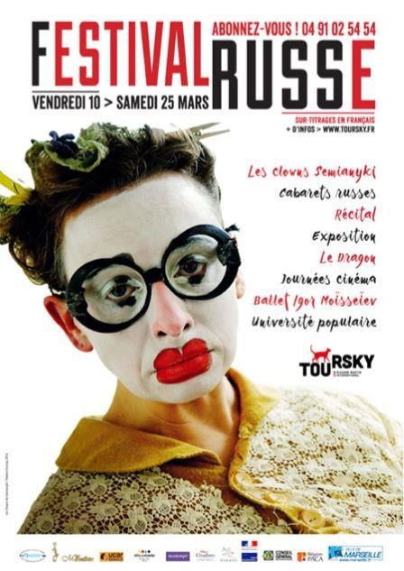

La culture est « un Droit de l’Homme ». Elle est un des piliers fondamentaux du lien social et de la démocratie. Le Théâtre Toursky, créé par Richard Martin qui rêvait d’installer dans un quartier populaire et blessé une action théâtrale décentralisée, est reconnu depuis de nombreuses années comme l’un des foyers les plus vivants de la vie culturelle à Marseille. Il représente par ailleurs pour moi un des hauts lieux culturels franco-russes, puisque l’année prochaine aura lieu le 25ème festival russe.
La petite histoire…
En 1971, Richard Martin fonde le Théâtre Toursky sur ce qui n’était qu’un hangar. C’était, disait-on en ce temps, une grande folie que de rêver installer dans un quartier populaire et blessé une action théâtrale décentralisée. L’idée même de création semblait à presque tous une utopie. En 1974, l’orientation artistique et citoyenne de Richard Martin débouche sur une création pionnière. Il équipe un autobus, le Théâtrobus, et égrène ses spectacles dans les cités. Amener sa troupe aux pieds des tours était une façon originale d’inscrire le théâtre dans les quartiers.
Pugnace et isolée, l’équipe du Toursky creuse son sillon. Ateliers, débats, collaboration avec le tissu associatif, les échanges avec les habitants se multiplient. Cette démarche est d’autant plus inédite qu’à l’époque, ni le travail social, ni la Politique de la Ville n’existaient encore.
Défendant farouchement l’idée que l’Art peut changer le social et les mentalités en combattant l’obscurantisme, Richard Martin et son théâtre n’avaient pas fini de tisser des liens entre le quartier, la Méditerranée et la citoyenneté
Utilisant les différences culturelles comme une force, il crée un lieu singulier dans lequel l’artiste est un messager qui se bat contre la bêtise et l’intolérance avec pour seule arme… des cris d’oiseaux.
Laboratoire artistique, espace de création, le Toursky accueille ainsi les saltimbanques du monde qui, au-delà de leur art, nous convient à faire tomber les barrières culturelles et sociales qui s’opposent au dialogue entre les peuples. Des artistes pour qui la guerre est un aveuglement, une faillite de l’intelligence, un accroc dans l’homme et qui ont en commun de se faire entendre pour que ceux qui attisent les haines et provoquent de véritables vindictes ethniques et religieuses reviennent sur la radicalité de leur prise de position.
Le Toursky ou la culture de l’engagement…
Menant un combat innovant hors des sentiers battus, convaincu qu’un théâtre replié sur ses propres valeurs et sa propre histoire est condamné à l’épuisement, Richard Martin n’a cessé de se battre pour présenter à tous les publics, y compris aux plus défavorisés, les courants majeurs de la création théâtrale contemporaine française et internationale.
Grâce à ses multiples engagements sociaux – lutte contre l’exclusion, l’obscurantisme et l’intolérance – le Théâtre tente de s’élever en rempart contre toutes les formes de violence et les intégrismes. Il n’a de cesse de se rendre accessible à tous et tisse des liens avec les habitants, les relais associatifs et les différentes communautés du quartier, de la Ville, du Département et de la Région.
Il s’implique dans tous les problèmes de société. Par ses actions, il a fait naître le respect de la population. Il est devenu une salle mythique de notoriété internationale, une place culturelle forte, une ouverture de parole pour le public, une agora démocratique de notre cité.
Le Festival russe
Rendez-vous incontournable depuis 1995, le Festival russe est indissociable du Théâtre Toursky qui accueille l’âme russe durant plusieurs jours, avec tout ce qu’elle a de burlesque, de folklorique, de déjanté, de festif, de flamboyant et de touchant. C’est un événement unique en France !
Ce Festival existe bien sûr grâce à la détermination de Richard Martin et bénéficie du soutien du Consulat général de Russie à Marseille en la personne de M. Sergey Molchanov, le Consul général de Russie à Marseille. Richard Martin depuis de nombreuses années se sent « en totale symbiose avec la culture russe pour de multiples raisons, tant affectives qu’humanistes car l’âme russe a cette
qualité rare de porter le génie de ses origines et de faire perdurer une résistance forte à l’oppression intellectuelle ou politique », a-t-il déclaré. « Leur musique, leur théâtre, leur cinéma sont inextricablement tissés d’une fusion d’humanisme, d’intelligence dans une subtile et mystérieuse alchimie. » a-t-il ajouté.
La Ville de Marseille a fait appel à un cabinet pour réaliser un audit sur la situation de ce théâtre situé dans le quartier de Saint-Mauront (3e). Face aux baisses drastiques des subventions que la municipalité lui alloue, le Toursky entre en action contre la politique culturelle de la municipalité. Grève de la faim prévue le 27 septembre devant l'hôtel de ville.
« La Ville de Marseille confirme publiquement la suppression de 85 000 euros de subventions au théâtre, soit plus de 170 000 euros de baisse en deux ans. Et ce brutalement, sans explication, sans préavis, sans avertissement et toujours en plein exercice », s'inquiète-t-on du côté du Toursky, indigné par le fait que la Ville décide de « confier à un cabinet extérieur un audit sur le Toursky pour voir si notre projet culturel est en adéquation avec le projet de la Ville. »
« Le Toursky constate que d'autres théâtres ont vu leurs subventions augmenter alors que la nôtre diminue. C'est un mauvais signal envoyé aux personnes qui vivent dans ce quartier, le plus pauvre d'Europe », regrette Michel Dossetto, président de la Compagnie Richard-Martin. Et Richard Martin s’insister : « Comment comprendre cette baisse de subvention pour le Toursky, cette incurie dans la gestion de la culture, alors que le budget culture de la Ville de Marseille pour l'année 2019 est en augmentation de 10 % ? À qui profitent ces moyens supplémentaires ? »
Face à cette mort programmée et devant tant d’incompréhension, le théâtre Toursky est entré en résistance active et Richard Martin, accompagné de plusieurs personnalités, a annoncé une grève de la faim le 27 septembre dernier à la suite d’un grand concert gratuit. Néanmoins une entrevue entre la Maire de Marseille et Richard Martin a eu lieu quelques jours avant l’ultimatum. Richard Martin semble depuis satisfait de cette rencontre et a décidé de suspendre pour l’instant sa grève de la faim jusqu’au 30 octobre 2019 date à laquelle les promesses très importantes pour l’avenir du Toursky doivent être concrétisées. Nous restons donc mobilisés et attentifs au suivi concret de ces engagements pris en personne par Monsieur Jean-Claude Gaudin, maire de Marseille.
F.M.
Le Théâtre Toursky est un lieu culturel historique de Marseille qui joue toujours à guichet fermé et qui est plébiscité par le public, les artistes et encensé par les médias qui y trouvent depuis 40 ans une programmation de qualité riche, variée et à nulle autre pareille. Il appartient donc à chacun de nous, amoureux des arts et de la culture russe de soutenir Richard Martin dans son combat.
Partager cette page